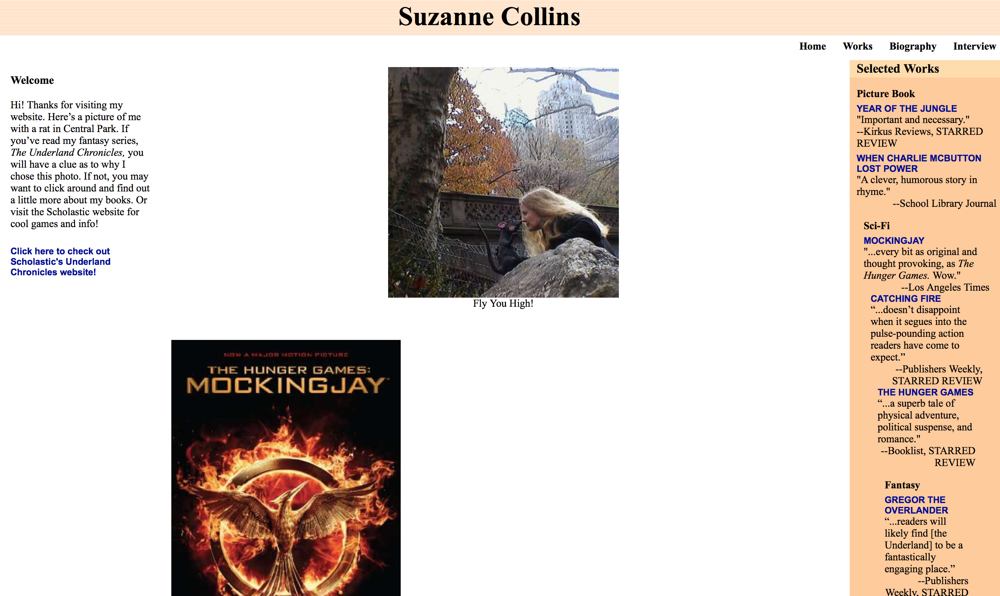
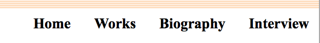

start exploring
ranking
Suzanne Collins is the famous author of the Hunger Games book trilogy, that has made its wasy onto the screen too. Her website includes information about the books she has wrriten, a biography on her and an interview with her. Her website only has four pages including the Home page. It has a very simple, basic aesthetic and color scheme.
Collins isn't about loading her page with tons of news, blogs and store links. She just wants to focus on the essentials. You can't actually buy her books anywhere on her site. If you click "Works," you get taken to a list of her books where you don't get an Amazon link, or anything. You just get a lot of quotes about the books and awards that they have won. This allows me to actually see what they book is about before I even think about buying it.
The text is all over the place and unformatted. It uses multiple fonts, has very little consistency and poor readability. There is a plain white backdrop throughout, and an off-orange sidebar that contains small soundbites from her work’s reviews in high-end publications. Her novels and the film versions are famous worldwide. She has the opportunity to include slick moving stills from the movies, but she doesn't. Moreover there is a "Quick Links" section at the very bottom with links to Amazon, Scholastic, Barnes & Noble and other well-known booksellers, but those links don't take you to a page where you can buy one of Collins' books, they just take you to the homepage of Amazon, Barnes & Noble or Scholastic. Lastly, clicking on the book cover does nothing. That would have been a great opportunity to either enlarge the image or take us to an online book store where we can buy the book.
Navigation - only four buttons
Biography Page
Work Page
If you click on one of those books, you get a bunch of quotes about and awards for that book.
Quick Links at bottom of page
The quick links just take you to the homepage of these websites, not the pages where you can buy her books.